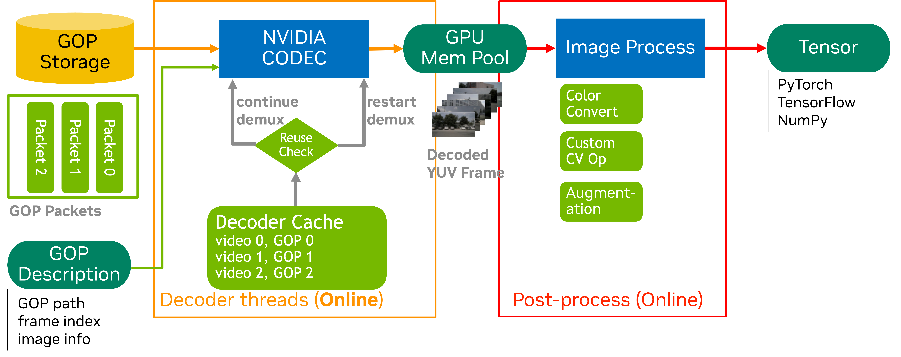

DataLoader Demuxer-Free Example
Overview
This example demonstrates how to use NVIDIA’s accvlab.on_demand_video_decoder library with PyTorch DataLoader for efficient demuxer-free video processing, ideal for training scenarios where datasets are reused frequently and demuxing overhead should be eliminated.
The specific code implementation can be found in packages/on_demand_video_decoder/examples/demuxer_free_decode and packages/on_demand_video_decoder/examples/demuxer_free_decode_cache.

The “demuxer-free” approach refers to pre-extracting and storing serialized GOP (Group of Pictures) bundles offline, enabling:
Zero Demuxing Overhead: All demuxing work is performed once during preprocessing; runtime only loads and decodes the stored GOP bundles
Maximum Throughput: Eliminates CPU demuxing bottleneck for higher decode performance
Reusable Dataset: GOP bundles are stored persistently and can be reused across multiple training runs
Fast Random Access: Pre-computed GOP indices enable instant frame-to-GOP lookup
The workflow consists of two phases:
Preprocessing Phase (Offline): Extract and store serialized GOP bundles from all videos
Training Phase (online): Load pre-stored GOP bundles and decode them directly on GPU
Key Features
Demuxer-Free Pipeline: Eliminates runtime demuxing by pre-storing serialized GOP bundles in binary format
Persistent GOP Index: Uses
.gop_index.jsonfiles for instant frame-to-GOP mapping without directory scansFixed GOP Optimization: Optional
--fix_gop_sizeenables fast-path computation for constant GOP size datasetsCustom PyTorch Dataset: Implements lazy initialization of GOP storage manager for memory-efficient loading
Custom Sampler: Organizes video clips into batches for efficient processing with distributed training support
Multi-camera Support: Handles synchronized frames from multiple cameras with pre-cached GOP bundles
Distributed Training: Compatible with PyTorch’s distributed training framework
Performance Profiling: Includes NVTX markers for performance analysis
Storage Flexibility: Supports both local and network storage for GOP bundle files
Index Data Format
Note
The JSON file and the selection of frames to access are used here for demonstration purposes. In a real-world scenario, the file names and indices would be obtained from the dataset metadata.
The example expects a JSON file with the following structure:
{
"video_dir1": {
"clip0id": frame_count,
"clip1id": frame_count,
...
},
"video_dir2": {
"clip0id": frame_count,
"clip1id": frame_count,
...
}
}
Each video directory should contain subdirectories for each clip, and each clip directory should contain MP4 files for different cameras.
GOP Storage Layout
Assuming video_base_path contains the original videos and gop_base_path is where GOP binaries are stored:
video_base_path/
├── clip0/
│ ├── cam0.mp4
│ └── cam1.mp4
└── clip1/
├── cam0.mp4
└── cam1.mp4
gop_base_path/
├── clip0/
│ ├── cam0.mp4/
│ │ ├── .gop_index.json
│ │ ├── gop.0.30.bin
│ │ ├── gop.30.27.bin
│ │ └── gop.57.30.bin
│ └── cam1.mp4/
│ ├── .gop_index.json
│ ├── gop.0.30.bin
│ ├── gop.30.27.bin
│ └── gop.57.30.bin
└── clip1/
├── cam0.mp4/
│ ├── .gop_index.json
│ ├── gop.0.30.bin
│ ├── gop.30.30.bin
│ └── gop.60.18.bin
└── cam1.mp4/
├── .gop_index.json
├── gop.0.30.bin
├── gop.30.30.bin
└── gop.60.18.bin
Data Loading Structure
For Random Access Pattern, ref to
packages/on_demand_video_decoder/docs/example/dataloader_random_decode.md.For Stream Access Pattern, ref to
packages/on_demand_video_decoder/docs/example/dataloader_stream_decode.md.
Key differences from online demuxing:
Preprocessing: Serialized GOP bundles are extracted once and stored as
.binfilesRuntime: Only file I/O and GPU decoding, no demuxing overhead
Random Access (Optional): Frame-to-GOP mapping is pre-computed in
.gop_index.json.
Usage
Step 1: Precompute and Store GOP Bundles
Before training, you need to extract and store serialized GOP bundles from your video dataset.
Edit the configuration paths in examples/demuxer_free_decode/main_store_gops.py:
VIDEO_BASE_PATH: Directory containing your original video filesGOP_BASE_PATH: Directory where GOP bundles will be stored
Then run the preprocessing script:
python examples/demuxer_free_decode/main_store_gops.py
Preprocessing Function Implementation:
221# .. doc-marker-begin: preprocessing-main
222def demuxer_free_decoder_test_store(video_base_path, gop_base_path):
223 """
224 Test storing GOP data using the GOPStorageManager interface.
225
226 Args:
227 video_base_path: Base path for video files
228 gop_base_path: Base path for GOP storage
229 """
230 print(f"Cleaning existing GOP storage at: {gop_base_path}")
231 cmd = f"rm -rf {gop_base_path}"
232 os.system(cmd)
233
234 print(f"Creating GOP storage manager...")
235 storage = GOPStorageManager(video_base_path, gop_base_path, clip_size=1)
236
237 print(f"Starting GOP extraction and storage...")
238 storage.store_gops()
239
240 print(f"GOP storage completed. Files saved to: {gop_base_path}")
241
242
This preprocessing step will:
Recursively scan
VIDEO_BASE_PATHfor all.mp4filesExtract serialized GOP bundles from each video
Store the bundles as
gop.{start_frame}.{frame_count}.binfiles underGOP_BASE_PATHGenerate
.gop_index.jsonfor each video to enable fast frame-to-GOP lookup
Note
This is a one-time operation per dataset. The stored GOP bundles can be reused across multiple training runs.
Step 2: Training with Demuxer-Free Pipeline
Basic Usage
python examples/demuxer_free_decode/main.py \
--index_file examples/index_frame.json \
--group_num 4 \
--num_workers 2 \
--video_base_path /data/nuscenes-mini/1600x900_gop30/ \
--gop_base_path /data/nuscenes-mini/1600x900_gop30_packets/
Fixed GOP Size Optimization
If your dataset has a constant GOP size, enable the fast-path optimization:
python examples/demuxer_free_decode/main.py \
--index_file examples/index_frame.json \
--group_num 4 \
--num_workers 2 \
--video_base_path /data/nuscenes-mini/1600x900_gop30/ \
--gop_base_path /data/nuscenes-mini/1600x900_gop30_packets/ \
--fix_gop_size 30
This skips GOP index file scanning and computes filenames directly for maximum performance.
Distributed Training
python -m torch.distributed.run --nproc_per_node=2 \
examples/demuxer_free_decode/main.py \
--index_file examples/index_frame.json \
--group_num 4 \
--num_workers 2 \
--video_base_path /data/nuscenes-mini/1600x900_gop30/ \
--gop_base_path /data/nuscenes-mini/1600x900_gop30_packets/
Command Line Arguments
--index_file: Path to the JSON file containing frame index information (default:examples/index_frame.json)--group_num: Number of clips to process in each batch (default: 4)--num_workers: Number of worker processes for data loading (default: 2)--video_base_path: Base directory of the original videos (used to derive relative GOP storage paths)--gop_base_path: Base directory containing stored GOP bundle files--use_persistent_index: Use.gop_index.jsonfiles for faster lookup (default: True)--fix_gop_size: Fixed GOP size for fast-path optimization (e.g., 30). If > 0, computes filenames directly without scanning
Architecture
GOPStorageManager
The GOPStorageManager class handles all GOP bundle storage and retrieval operations.
Initialization:
96 # .. doc-marker-begin: gop-storage-init
97 def __init__(
98 self, video_base_path: str, gop_base_path: str, clip_size: int, use_persistent_index: bool = True
99 ):
100 """
101 Initialize the GOP Storage Manager.
102
103 Args:
104 video_base_path (str): Base directory containing video files
105 gop_base_path (str): Base directory for storing GOP data
106 use_persistent_index (bool): Whether to use persistent index files
107 """
108 self.video_base_path = video_base_path
109 self.gop_base_path = gop_base_path
110 self.use_persistent_index = use_persistent_index
111 self.nv_gop_demuxer = nvc.CreateGopDecoder(
112 maxfiles=clip_size, # Maximum number of files to use
113 iGpu=0, # GPU ID
114 )
115 os.makedirs(self.gop_base_path, exist_ok=True)
116
store_gops() - Preprocessing Method:
Extracts serialized GOP bundles from all .mp4 files under video_base_path, saves each GOP as gop.{start_frame}.{frame_count}.bin, and generates .gop_index.json for fast frame-to-GOP mapping.
263 # .. doc-marker-begin: gop-storage-store
264 def store_gops(self):
265 """
266 Extract and store GOP data for all video files in the video_base_path.
267
268 This method recursively processes all .mp4 files in the video base directory,
269 extracts GOP data, and stores them as binary files in the GOP base directory.
270 """
271 for root, dirs, files in os.walk(self.video_base_path):
272 for file in files:
273 if file.endswith('.mp4'):
274 video_path = os.path.join(root, file)
275 video_relpath = os.path.relpath(video_path, self.video_base_path)
276 clip_relpath = os.path.dirname(video_relpath)
277
278 print(f"Processing video: {video_path}")
279
280 frame_idx = 0
281 pre_first_frame_id = -1
282 gop_infos = []
283
284 while True:
285 try:
286 (packets_tuple,) = self.nv_gop_demuxer.GetGOPList([video_path], [frame_idx])
287 numpy_data, first_frame_ids, gop_lens = packets_tuple
288
289 # Check if we've processed this GOP already
290 if pre_first_frame_id == first_frame_ids[0]:
291 break
292 pre_first_frame_id = first_frame_ids[0]
293
294 # Store the GOP
295 if self.store_single_gop(clip_relpath, video_path, packets_tuple):
296 # Add to index info
297 video_name = os.path.basename(video_path)
298 clip_dir = os.path.join(self.gop_base_path, clip_relpath, video_name)
299 gop_name = f"gop.{first_frame_ids[0]}.{gop_lens[0]}.bin"
300 gop_path = os.path.join(clip_dir, gop_name)
301
302 gop_infos.append(
303 GOPInfo(
304 file_path=gop_path,
305 first_frame_id=first_frame_ids[0],
306 gop_len=gop_lens[0],
307 )
308 )
309
310 frame_idx += gop_lens[0]
311
312 except Exception as e:
313 print(f"Error processing frame {frame_idx}: {e}")
314 break
315
316 # Create index file immediately after processing each video
317 if gop_infos:
318 video_name = os.path.basename(video_path)
319 clip_dir = os.path.join(self.gop_base_path, clip_relpath, video_name)
320 self._save_persistent_index(clip_dir, gop_infos)
321 print(f"Created index with {len(gop_infos)} GOPs for {video_path}")
322
load_gops() - Runtime Method:
Loads the required GOP bundles by consulting the persistent index, returns a list of serialized GOP bundles via LoadGopsToList() for GPU decoding, and supports variable GOP sizes within a video.
325 # .. doc-marker-begin: gop-storage-load
326 def load_gops(self, frame_ids: List[int], video_paths: List[str]) -> Optional[List[np.ndarray]]:
327 """
328 Load multiple GOPs for the specified frames and video paths using LoadGopsToList.
329
330 Args:
331 frame_ids (List[int]): List of target frame indices
332 video_paths (List[str]): List of video file paths
333
334 Returns:
335 Optional[List[np.ndarray]]: List of per-video numpy arrays compatible with
336 DecodeFromGOPListRGB, or None if one or more of
337 the GOPs were not found
338 """
339 torch.cuda.nvtx.range_push("load_gops_manager")
340
341 if len(frame_ids) != len(video_paths):
342 print(f"Error: frame_ids length ({len(frame_ids)}) != video_paths length ({len(video_paths)})")
343 torch.cuda.nvtx.range_pop()
344 return None
345
346 # Find GOP files for each frame
347 gop_file_paths = []
348
349 for frame_id, video_path in zip(frame_ids, video_paths):
350 # Get GOP index for this video
351 gop_infos = self._load_persistent_index(video_path)
352 if not gop_infos:
353 print(f"Error: No GOP index found for video {video_path}")
354 torch.cuda.nvtx.range_pop()
355 return None
356
357 # Find the GOP containing the target frame
358 gop_info = self._find_gop_for_frame(gop_infos, frame_id)
359 if gop_info is None:
360 print(f"Error: Could not find GOP for video {video_path}, frame {frame_id}")
361 torch.cuda.nvtx.range_pop()
362 return None
363
364 gop_file_paths.append(gop_info.file_path)
365
366 try:
367 gop_data_list = self.nv_gop_demuxer.LoadGopsToList(gop_file_paths)
368 torch.cuda.nvtx.range_pop()
369 return gop_data_list
370 except Exception as e:
371 print(f"Error loading GOPs: {e}")
372 torch.cuda.nvtx.range_pop()
373 return None
374
load_gops_fast() - Optimized Runtime Method:
Computes GOP filenames directly using --fix_gop_size, skips index file reading for maximum performance, and requires constant GOP size across the dataset.
377 # .. doc-marker-begin: gop-storage-load-fast
378 def load_gops_fast(
379 self, frame_ids: List[int], video_paths: List[str], fix_gop_size: int
380 ) -> Optional[List[np.ndarray]]:
381 """
382 Fast path to load multiple GOPs assuming a fixed GOP size in filenames.
383
384 This avoids scanning directories or loading indices by directly computing the
385 GOP file path: gop.{first_frame_id}.{fix_gop_size}.bin where
386 first_frame_id = (frame_id // fix_gop_size) * fix_gop_size.
387
388 Args:
389 frame_ids (List[int]): List of target frame indices.
390 video_paths (List[str]): List of corresponding video file paths.
391 fix_gop_size (int): Fixed GOP size used when storing, e.g., 30.
392
393 Returns:
394 Optional[List[np.ndarray]]: List of per-video numpy arrays compatible with
395 DecodeFromGOPListRGB, or None if any single GOP file is
396 missing (fail-fast: returns immediately on first miss).
397 """
398 torch.cuda.nvtx.range_push("load_gops_fast_manager")
399
400 if fix_gop_size is None or fix_gop_size <= 0:
401 print(f"Error: invalid fix_gop_size {fix_gop_size}")
402 torch.cuda.nvtx.range_pop()
403 return None
404
405 if len(frame_ids) != len(video_paths):
406 print(f"Error: frame_ids length ({len(frame_ids)}) != video_paths length ({len(video_paths)})")
407 torch.cuda.nvtx.range_pop()
408 return None
409
410 gop_file_paths: List[str] = []
411
412 for frame_id, video_path in zip(frame_ids, video_paths):
413 # Compute GOP directory based on relative path
414 video_relpath = os.path.relpath(video_path, self.video_base_path)
415 gop_dir = os.path.join(self.gop_base_path, video_relpath)
416
417 # Compute first_frame_id for this GOP
418 if frame_id < 0:
419 print(f"Error: negative frame_id {frame_id} for {video_path}")
420 torch.cuda.nvtx.range_pop()
421 return None
422
423 first_frame_id = (frame_id // fix_gop_size) * fix_gop_size
424 expected_name = f"gop.{first_frame_id}.{fix_gop_size}.bin"
425 expected_path = os.path.join(gop_dir, expected_name)
426
427 if os.path.exists(expected_path):
428 gop_file_paths.append(expected_path)
429 continue
430
431 # Fallback: try to find any file that matches the first_frame_id with any GOP len (e.g., tail GOP)
432 fallback_found = False
433 try:
434 for filename in os.listdir(gop_dir):
435 if filename.startswith(f"gop.{first_frame_id}.") and filename.endswith('.bin'):
436 gop_file_paths.append(os.path.join(gop_dir, filename))
437 fallback_found = True
438 break
439 except Exception:
440 pass
441
442 if not fallback_found:
443 print(
444 f"Error: GOP file not found for video {video_path}, frame {frame_id}. Expected {expected_path}"
445 )
446 torch.cuda.nvtx.range_pop()
447 return None
448
449 try:
450 gop_data_list = self.nv_gop_demuxer.LoadGopsToList(gop_file_paths)
451 torch.cuda.nvtx.range_pop()
452 return gop_data_list
453 except Exception as e:
454 print(f"Error loading GOPs (fast): {e}")
455 torch.cuda.nvtx.range_pop()
456 return None
457
VideoClipDatasetDecodeOnly
The VideoClipDatasetDecodeOnly class extends PyTorch’s Dataset and provides:
Lazy initialization of
GOPStorageManagerfor memory efficiencyReturns
PacketOndemandBufferscontaining pre-loaded GOP bundles for each batch itemMulti-camera frame synchronization with pre-cached GOP bundles
Error handling and validation
Compatible with decoders from
video_transforms.py
Implementation:
96# .. doc-marker-begin: dataset-decode-only
97class VideoClipDatasetDecodeOnly(Dataset):
98 """
99 Dataset that loads pre-stored GOP packet data for the requested frames and clips
100 using GOPStorageManager, returning buffers suitable for direct decoding.
101 """
102
103 def __init__(
104 self,
105 index_frame: Dict[str, Dict[str, int]],
106 group_num: int,
107 video_base_path: str,
108 gop_base_path: str,
109 num_cameras: int = NUM_CAMERAS,
110 use_persistent_index: bool = True,
111 fix_gop_size: int = 0,
112 ):
113 self.index_frame = index_frame
114 self.group_num = group_num
115 self.video_base_path = video_base_path
116 self.gop_base_path = gop_base_path
117 self.num_cameras = num_cameras
118 self.use_persistent_index = use_persistent_index
119 self.fix_gop_size = fix_gop_size
120
121 self._is_initialized = False
122 self._storage: GOPStorageManager = None # type: ignore
123
124 if group_num <= 0:
125 raise ValueError(f"group_num must be positive, got {group_num}")
126 if num_cameras <= 0:
127 raise ValueError(f"num_cameras must be positive, got {num_cameras}")
128
129 logger.info(f"Initialized demuxer-free dataset with {num_cameras} cameras, group_num={group_num}")
130
131 def __len__(self) -> int:
132 total_frames = 0
133 for _, clip_info in self.index_frame.items():
134 for _, frame_count in clip_info.items():
135 total_frames += frame_count
136 return total_frames // self.group_num
137
138 def __lazy_init__(self):
139 if self._is_initialized:
140 return
141 self._storage = GOPStorageManager(
142 video_base_path=self.video_base_path,
143 gop_base_path=self.gop_base_path,
144 clip_size=self.num_cameras,
145 use_persistent_index=self.use_persistent_index,
146 )
147 self._is_initialized = True
148
149 def __getitem__(self, index: List[Tuple[str, int]]) -> List[Any]:
150 if not isinstance(index, list):
151 raise ValueError(f"Expected list of tuples, got {type(index)}")
152 self.__lazy_init__()
153
154 episode_buffers = []
155
156 for i, (clip_path, frame_idx, _) in enumerate(index):
157 # Find all MP4 files in the clip directory
158 if not os.path.isdir(clip_path):
159 logger.warning(f"Clip path is not a directory: {clip_path}")
160 continue
161
162 video_paths = sorted(
163 [os.path.join(clip_path, f) for f in os.listdir(clip_path) if f.endswith('.mp4')],
164 key=lambda x: os.path.basename(x),
165 )
166
167 if not video_paths:
168 logger.warning(f"No MP4 files found in {clip_path}")
169 continue
170
171 frame_indices = [frame_idx] * len(video_paths)
172
173 if self.fix_gop_size > 0:
174 gop_data_list = self._storage.load_gops_fast(frame_indices, video_paths, self.fix_gop_size)
175 else:
176 gop_data_list = self._storage.load_gops(frame_indices, video_paths)
177
178 if gop_data_list is None:
179 logger.warning(f"Failed to load GOP packets for {clip_path} at frame {frame_idx}")
180 continue
181
182 episode_buffers.append(
183 video_transforms.PacketOndemandBuffers(
184 gop_packets=gop_data_list,
185 target_frame_list=frame_indices,
186 target_file_list=video_paths,
187 use_cache=False,
188 sample_idx=i,
189 )
190 )
191
192 return episode_buffers
193
194
VideoClipSampler
The VideoClipSampler class extends PyTorch’s Sampler and provides:
Organizes
group_numclips into each batch for efficient processingDistributed training support with proper rank/world_size sharding
Optional shuffling support for each epoch
Ensures balanced workload distribution across GPU ranks
Example Training Loop
The following code shows the complete setup for training with the demuxer-free pipeline:
402 # .. doc-marker-begin: training-setup
403 local_rank, local_world_size = setup_distributed()
404
405 index_frame = load_index_frame(args.index_file)
406
407 dataset = VideoClipDatasetDecodeOnly(
408 index_frame=index_frame,
409 group_num=args.group_num,
410 video_base_path=args.video_base_path,
411 gop_base_path=args.gop_base_path,
412 num_cameras=NUM_CAMERAS,
413 use_persistent_index=args.use_persistent_index,
414 fix_gop_size=args.fix_gop_size,
415 )
416
417 if args.frame_read_type == 'stream':
418 sampler = video_clip_sampler.VideoClipSamplerStream(
419 index_frame=index_frame,
420 group_num=args.group_num,
421 rank=local_rank,
422 world_size=local_world_size,
423 )
424 elif args.frame_read_type == 'random':
425 sampler = video_clip_sampler.VideoClipSamplerRandom(
426 index_frame=index_frame,
427 group_num=args.group_num,
428 rank=local_rank,
429 world_size=local_world_size,
430 )
431 else:
432 raise ValueError(f"Unknown frame_read_type: {args.frame_read_type}")
433
434 dataloader = DataLoader(
435 dataset,
436 batch_size=1,
437 sampler=sampler,
438 num_workers=args.num_workers,
439 pin_memory=False,
440 )
441
442 decoder = video_transforms.DecodeVideoOnDemand(device_id=local_rank, num_cameras=NUM_CAMERAS)
443
444 run_warmup(dataloader, decoder, args.warmup_iterations)
445
446 metrics = run_benchmark(dataloader, decoder, args.group_num, args.log_interval)
447
448 print_performance_summary(metrics, args.num_workers)
Performance
Test Environment
GPU: NVIDIA A100-SXM4-80GB
CPU: AMD EPYC 7J13 64-Core Processor
Storage: NFS
DataSet: NuScenes-mini, 10 clips, 6 cameras, H.265, 1600x900, GOP_SIZE=30, non-bframe
Performance Metrics (frames/sec)
Using the Demuxer-Free Access API, measure the throughput (frames per second) between stream frame access and random frame access:
configuration |
stream access |
random access |
|---|---|---|
1 GPU |
803.09 |
306.29 |
2 GPU |
1584.18 |
615.5 |
4 GPU |
2847.4 |
1195.65 |
8 GPU |
3859.31 |
2326.49 |
Optimization Tips
CPU Efficiency: Demuxing overhead is completely eliminated; workers only perform filesystem I/O and GOP bundle loading
GPU Memory: Only the main process requires GPU resources for decoding; adjust
group_numbased on available GPU memoryPersistent Index: Keep
--use_persistent_indexenabled for large datasets to avoid directory scans at runtimeFixed GOP Fast Path: Use
--fix_gop_sizewhen your dataset has constant GOP size for maximum throughputStorage Location: Place
gop_base_pathon fast local/NVMe storage for optimal I/O performanceWorker Processes: Adjust
num_workersbased on storage bandwidth and CPU coresGOP Size: Smaller GOP sizes improve random access performance but increase storage overhead
Note
While this example demonstrates the basic usage of the demuxer-free approach, this is not the maximum performance which can be achieved with this approach. We can still do more optimization such as introducing a GOP cache mechanism & passing only newly accessed GOPs from the data loader processes to the main process to achieve better performance.
Performance Profiling
Use NVIDIA Nsight Systems for detailed performance analysis:
nsys profile --trace-fork-before-exec true -w true -f true -t cuda,nvtx,osrt,cudnn,cublas,nvvideo --gpu-video-device all -x true -o dataloader_decode_only python examples/demuxer_free_decode/main.py --index_file examples/index_frame.json